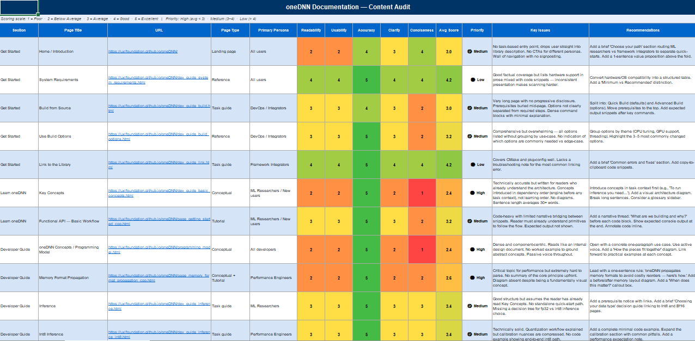
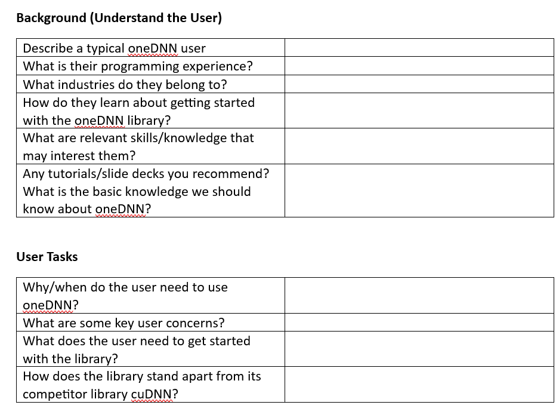
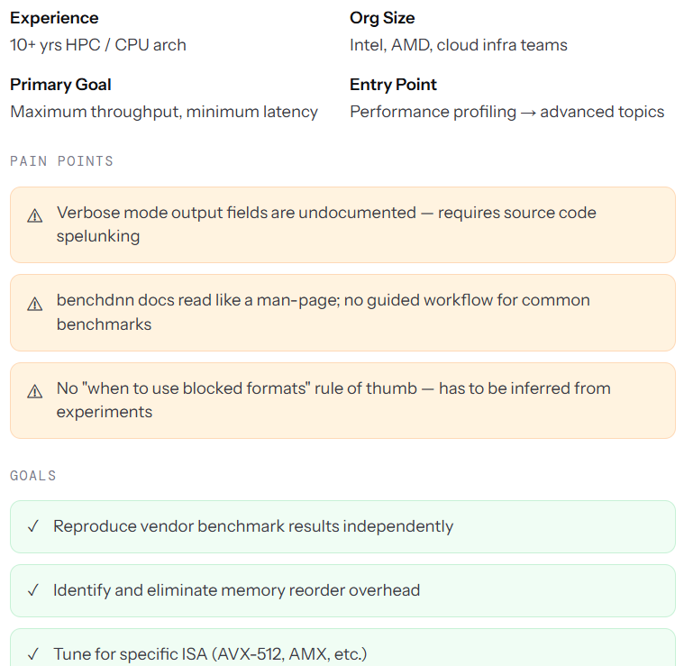
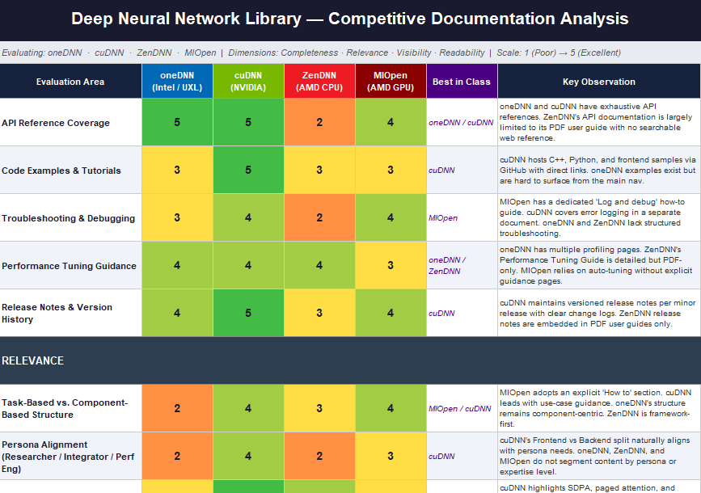
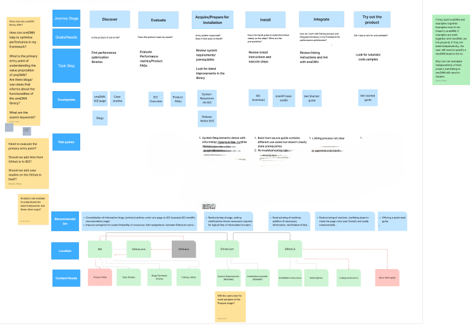
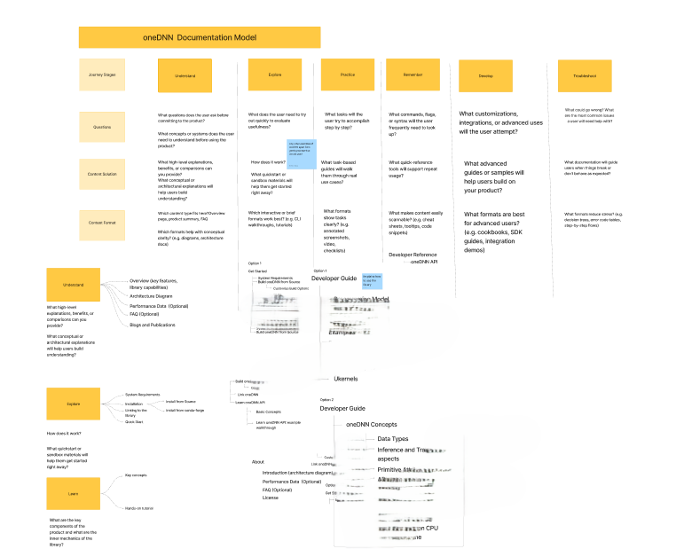
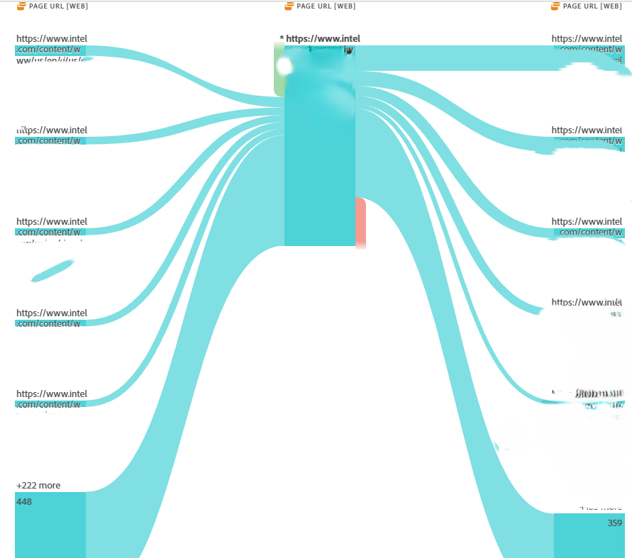

Intel oneAPI Deep Neural Network Library (oneDNN) is a low-level AI performance library used to optimize deep learning applications running on CPUs and GPUs. As a technical writer for the library, I was assigned to examine the usability and functionality of the documentation. The problems I noticed with the library documentation were: • The library had fragmented information with tutorials, getting started information, code samples which was affecting the onboarding experience of the developers. • The library had topics organized around concepts, such as primitives, engines, streams, memory, objects, but were not task-oriented such as, get started, how to create oneDNN memory objects, and so on.
My Role Being the content lead of the project, I developed a strategy framework that streamlined the onboarding experience for the library open-source users. * Collaborated with the UX researchers, to identify the friction points and usability issues. * Assessed user needs and align content with user journey and complies with user flow.
I completed a comprehensive audit of existing documentation pages, identifying gaps, redundancies, outdated content, and areas with poor readability scores that caused friction during developer onboarding.

Few key insights:
I interviewed product and engineering teams to get an insight into the persona, understand their typical workflow to onboard and get started with the library. I collaborated with UX researchers to do a thorough persona analysis and later conducted usability studies which revealed the technical stack they are using, the architecture/components they are comfortable with, etc. The audience for this library can be categorized as, AI framework developers, AI application developers, data scientists.


Key Insights:
I analyzed competitor documentation to identify best practices and opportunities for differentiation.

Key Insights:
I created a detailed developer journey map for the key persona mapping out all possibilities when completing a task which revealed the pain points and opportunities at each stage. This visual representation helped to align the product managers and engineering stakeholders on what is lacking and how the documentation can be improved.

With all the inputs from the previous steps, I collated the modules that can be created or updated and I designed a new documentation structure. I organized content around user tasks rather than technical components.

Key Changes Made:
I tracked key metrics (user satisfaction, page views, bounce rates) and continued optimizing content based on data insights. Key Metrics Tracked: • User satisfaction scores (30% improvement) • Page readability scores (20% improvement) • Adoption rate (10% improvement) • Time to first success • Page views and bounce rates
I created a visualization flow using Adobe Analytics to further track the entry points and exit paths.

The comprehensive IA redesign resulted in: